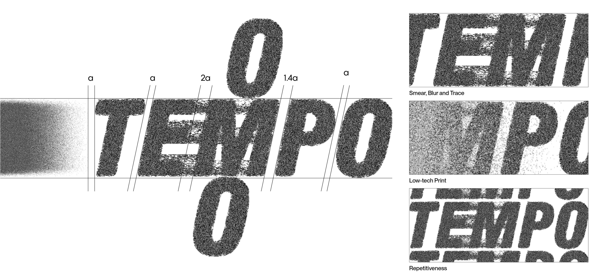
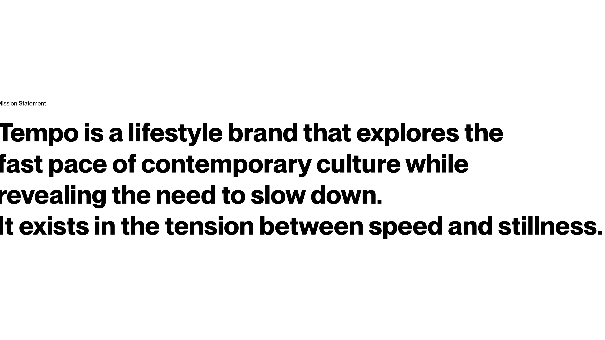
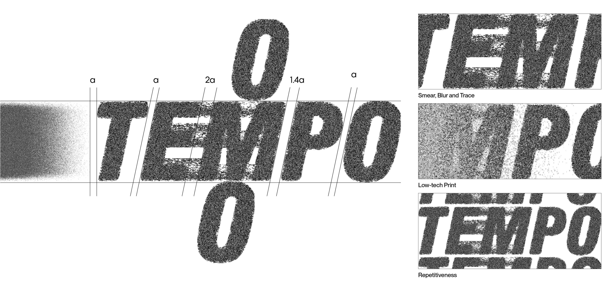
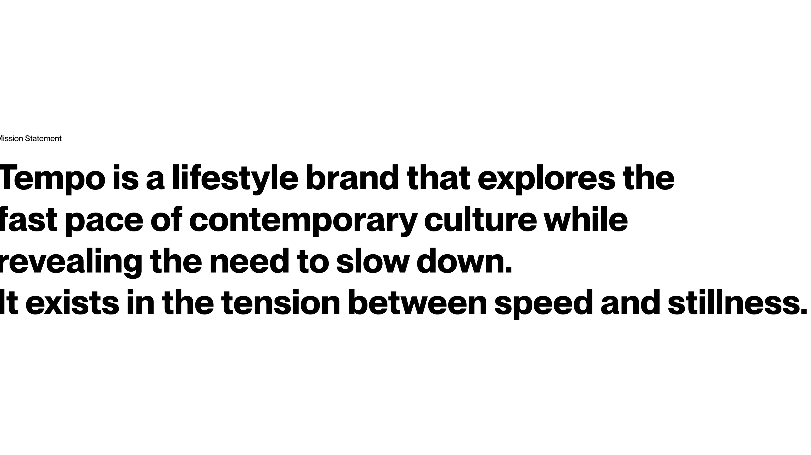

Monica Hsieh
TEMPO: FROM RUNWAY TO STORE
Brand Experience Design
The Store as Stage
Beginning with archival research and spatial analysis, this project examines the shared evolution of runway shows and retail spaces as staged environments shaped by performance and audience engagement. These insights are translated into Tempo, a pop-up retail framework that repositions the store as a performative space between event and shopping.
-
2025
-
Thesis Project (Syracuse University)
-
Brand Experience Design
-
Syracuse, NY
-
Michael Speaks, Ali Chen, Erin Cuevas
Tracing the Evolution of Runway Space
This study began with an observation of archival photographs and historical footage of runway shows. By mapping these materials chronologically, a significant turning point emerged around 1971, when scenography and exhibition design began to influence fashion presentation. From that moment, runway shows evolved beyond showcasing garments to constructing immersive spatial narratives.
Evolving Interactions: From Intimacy to Influence
The diagrams trace how runway spaces evolved from intimate salon rooms to expansive public venues. Early shows were exclusive and close to the audience, later shifting to linear catwalks and brand-specific settings. With technological progress, temporary industrial and outdoor stages emerged, reflecting fashion’s move toward inclusivity and public presence.
From Private Salon to Global Screen
The evolution of media and technology has expanded the reach of runway shows beyond their original private audiences. Early presentations were limited to invited guests and later shared through print media. As photography and fashion magazines emerged, exposure accelerated and reached broader social circles. The rise of digital platforms introduced bloggers and online viewers, eventually leading to today’s celebrity- and influencer-driven audiences, where live streaming allows global participation in real time.
Audience and Performer Interaction
The final diagrams zoom in on how performers and audiences interact. Early salons placed viewers close to the garments, encouraging direct observation and tactile engagement. With the emergence of linear catwalks and photographers, distance increased and focus shifted from clothing details to atmosphere and brand identity. Today, audiences often experience the show through screens, extending participation beyond the physical space.
Design Premise: Between Runway and Retail
When viewed through a shared spatial lens, runway shows and retail spaces reveal parallel evolutions toward curated, staged, and fast-paced experiences. Positioned between event and stage, the pop-up emerges as a spatial hybrid that bridges the two. This intersection becomes the conceptual starting point of Tempo.
Visual Identity System: Between Fast and Slow
Tempo positions the pop-up between runway and retail, translating speed and performance into a spatial and graphic framework. The identity originates from an animation-based system exploring blur, drag, and ghosted traces; in this portfolio, selected still frames represent that motion over time. Through smeared, low-tech letterforms, the logo reflects the brand's mission to create moments of stillness within fast, temporary fashion culture.

 



Visual Concept: Motion and Blur
Inspired by fast culture, Tempo works with blur, motion, and partial visibility to explore the tension between speed and stillness, shaping its materials, graphics, and pop-up design.
Consumer Journey: From Physical Pause to Digital Loop
Tempo’s consumer journey begins with a physical photobooth rather than social media. For most visitors, this is their first encounter with the brand. The photo strip serves as both a record and a ticket into the main pop-up. Inside, visitors begin as the audience. After trying on the garments, they step onto the central runway and become performers. At the end of the experience, a digitally linked receipt extends the encounter beyond the physical space and leads to the next pop-up. This cyclical journey reflects Tempo’s core tension between speed and stillness, moving from a deliberate physical pause to a fast digital loop.
Spatial Layout: Runway-Based Organization
The pop-up is organized around a central runway that structures both circulation and display. Apparel and footwear are positioned on opposite sides, while the counter and fitting rooms anchor the space at the rear. Ceiling-mounted projectors introduce moving logos and visuals, allowing motion to blur across products, bodies, and space.
Spatial Section: Visual Boundaries and Sightlines
The section reveals projectors mounted to suspended ceiling fixtures, working with haze to create an invisible visual layer between products and visitors. This permeable boundary allows bodies to pass through while visually distorting movement and perception. A one-way mirror separates the runway from the shopping areas, allowing the audience to observe performers without being seen.
Storefront: Framing the Runway to the Street
The storefront uses metal and frosted glass to create a cool, fashion-forward presence. Only the central runway opens to the street through one-way mirror panels, allowing passersby to view the interior while maintaining visual privacy for those inside. This condition turns the street into an extension of the show.
Shopping Area: Browsing as Spectatorship
Upon entering, visitors move through shopping areas flanking the central runway, browsing products while observing the activity along it and remaining in the role of the audience. The shopping areas pair reflective metal display systems with rough gray concrete. Linear lighting reinforces the spatial rhythm and sense of forward movement through the space.
Detail: Rack and Lighting Calibration
The rack system is calibrated to eye level for viewing. Suspended lighting heights are set by projection geometry to avoid direct visual exposure. Each module displays coordinated outfits, with tops above and lower garments below.
Runway: From Audience to Performer
After changing, visitors step onto the central runway, the only mirrored space, where movement and attention are drawn inward and the role shifts from audience to performer. Slightly angled mirrors and a continuous linear lighting pattern create shifting views along the runway, echoing the rhythm of the brand, Tempo. At the end of the runway, openings between mirrors frame views back toward the shopping areas. Reflections alternate between self and others, sharp and blurred, creating a layered visual condition that encourages prolonged engagement.
Detail: Light and Visibility
The detail drawings show linear ceiling lighting designed as reflected light, creating a softer illumination. One-way mirrors along the runway and street-facing wall allow views into the space, extending the audience beyond the interior.
Visual Boundary
Projectors and haze machines work together to form an invisible visual boundary within the space. This atmospheric layer blends dynamic visual effects with static displays, subtly distorting perception and slowing the pace of movement and viewing.
Physical Artifacts: From Transaction to Keepsake
Blurred imagery in the lookbook reflects fast fashion’s partial visibility while keeping product information clear. Visitor-embedded photo tickets and receipts transform disposable transactions into keepsakes, extending the pop-up beyond the space.
Blurred Photobooth
A blurred photobooth appears at unexpected moments in the city, generating photo tickets that serve as entry passes to the main pop-up event.
Signage
The storefront signage uses a metal frame and dark mirrored monitor to translate the logo’s motion into a dynamic visual presence at the entrance.
Urban Visibility
Brand posters at bus stops extend Tempo’s presence across the city, using varied visual treatments to attract attention beyond the photobooth.

Digital Artifacts: Interaction and Circulation
The website reveals product information through cursor interaction, encouraging slower and more deliberate exploration. Instagram stories and tagging circulate brand exposure, linking digital engagement to the pop-up experience.